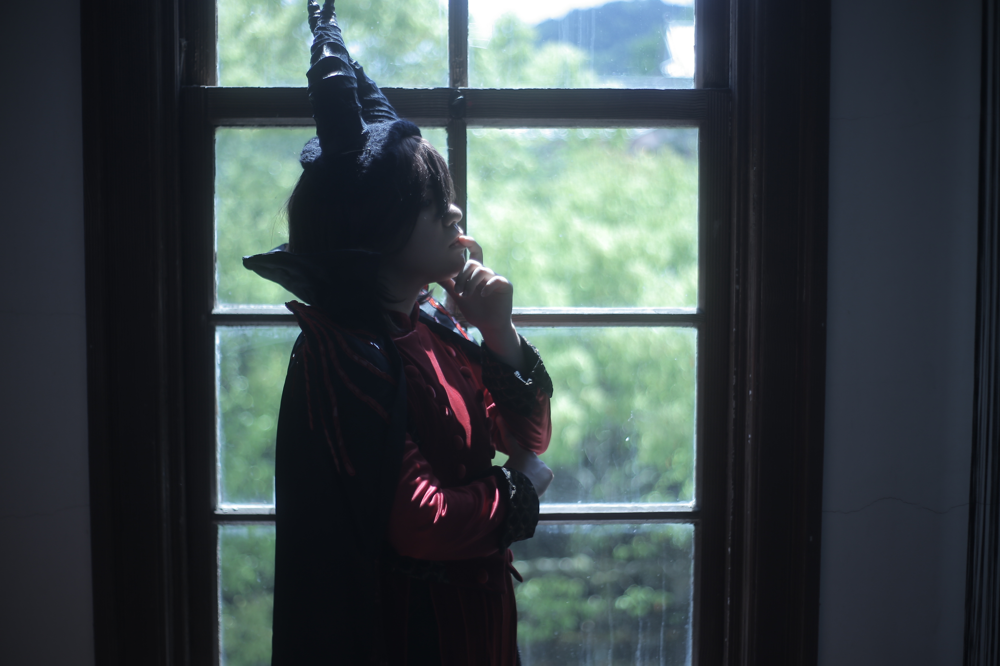
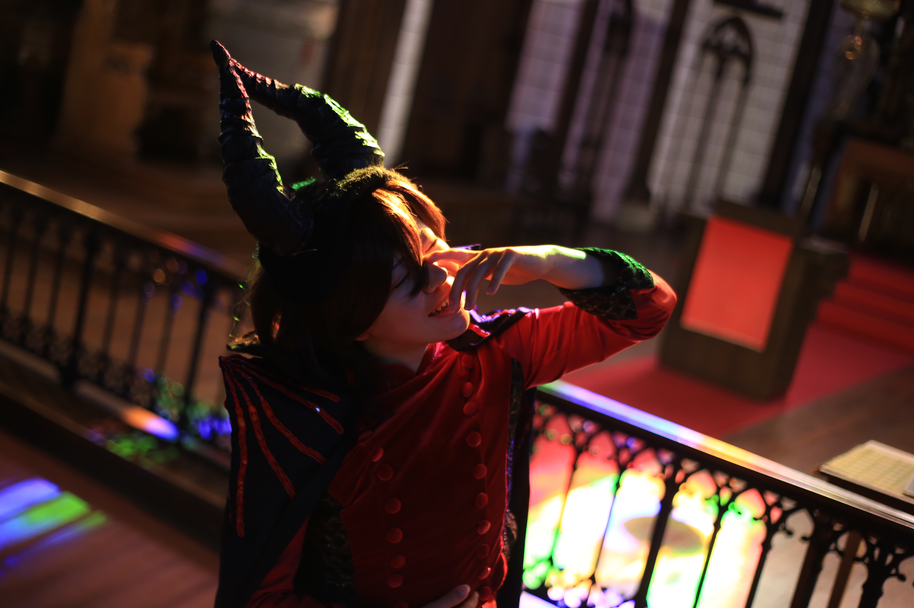
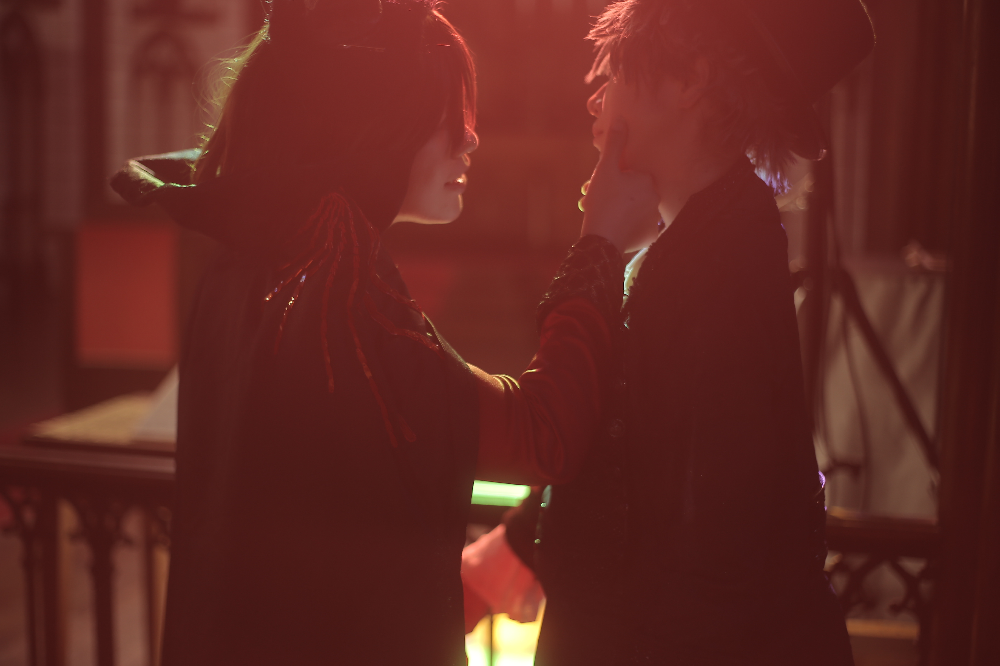
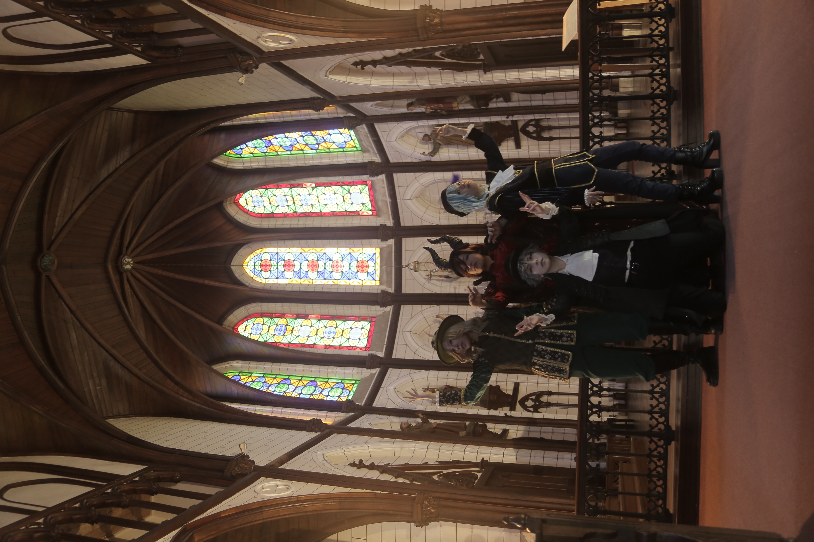

「人間が勝つか悪魔が勝つか」
「私のすべてを持ってあの男を地獄に落としてやる」


「人生はなんて残酷なんだ。
人生を費やしても、この世のすべてを知ることはできなかった」
「せめて心を分かち合える友がいたら....」
「メフィスト・フェレスがその願い、叶えよう。契約成立だ」


「ワーグナー、君は研究室にこもってばかり。たまには気晴らしに外に出るのも悪くないだろ？」
「そうだね、マルクス」

「面白い話をしているね。詳しく話を聞かせてもらえるかな」
「あなたは....」


「こんなに気が合う人は初めてだ」
「友というものはこんなに素晴らしいものなのか」


「君にこれをあげる」
「マルクス、君は私のデイジーだ」


「ファウストのせいマルクスが
僕から離れていった
アイツが現れたせいで
僕の唯一の親友を失った」
「許さない.....」

「アイツを亡き者にしようとしたはずが
誤って親友をこの手で亡き者にしてしまった」
「必ずこの手でよみがえらせてみせる」


「おやおや君がここまでできるとは」
「俺はマルクスをよみがえらせることができるなら何だって...」
「禁忌さえ.....」


「生き返らせたはずが、
あれは親友の皮を被った化け物だ」
「こんなはずではなかった」
「僕は命の恩人なのに」

「共に生きて共に死のう」
「何をしようとしている！ワーグナー！」


「君を一人にしておけないからね」
「これから先もずっと一緒だ」


「あはははは！都合の良い走馬灯でも見ているんだろう！」
「これで二人の魂は俺のものだ！あとは....」

「お前に親友はいるか！弟子はいるか！
研究者としての誇りはあるか！」
「....ない。」
「時よ止まれ。」
「時は満ちた。」
「神に許された....?!」
「このメフィスト・フェレスが負けただと....?!」

旅路の終わりに響かせよう。
咎人たちのレクイエムを